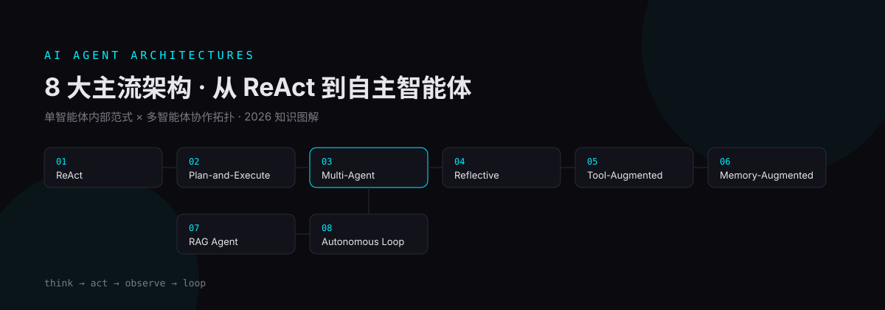

- 8 大架构分两个维度：7 种单智能体内部范式（怎么思考、用什么能力）+ 1 个多智能体协作大类（多个 Agent 怎么组织）
- Multi-Agent 下面再分 9 种协作拓扑：主管、角色、流水线、层级、规划-执行、反思/评审、辩论、路由、网状
- 两个维度可以自由叠加：ReAct + 主管模式、RAG + 角色模式，是生产系统的常见组合
- 选型口诀：任务结构确定用流水线/主管，追求质量迭代用反思/辩论，规模大用层级/规划-执行，知识密集用 RAG，长期交互配记忆
2026 年，会调 API 已经不算会做 Agent 了。真正的分水岭在于：你能不能说清楚手上这个 Agent 是怎么思考、怎么行动、怎么协作的。同样是调用量化模型，有人一个 ReAct 循环就跑通了 demo，也有人用「主管 + 四个专家」的团队结构扛住了生产流量——差别不在模型，在架构。
这篇文章整理自一份广泛流传的《AI Agent 8 大主流架构》图解，并结合我此前对多智能体协作模式的系统梳理，把每种架构的运转方式、优缺点、适用场景一次讲透。文中 ReAct 与 Multi-Agent 两节嵌入了可交互的架构图（支持缩放、主题切换、关系追踪），可以直接动手玩。
一、先对齐框架：8 大架构到底在分类什么
很多人看架构盘点最容易犯的错，是把不同维度的东西放在一个筐里比较。这 8 种架构其实是两个维度：
维度一：单智能体内部架构——讲「一个 Agent 自己怎么思考、用什么能力」，包括 ReAct、Plan-and-Execute、Reflective、Tool-Augmented、Memory-Augmented、RAG、Autonomous Loop 这 7 种。
维度二：多智能体协作——即第 3 项 Multi-Agent，它是一个大类，下面再按「多个 Agent 怎么组织」细分出主管、角色、流水线等 9 种协作拓扑。
关键结论：7 种内部范式可以叠加在任何一种协作拓扑上。你可以搭一个「ReAct + 主管模式」的研发团队，也可以做一个「RAG + 角色模式」的知识库问答圆桌。二者是正交的组合项，不是二选一。
| # | 架构 | 一句话 | 优点 | 缺点 |
|---|---|---|---|---|
| 01 | ReAct | 推理（Reason）与行动（Act）交替，边想边做 | 简单通用，啥都能套 | 来回调 LLM，费钱又慢 |
| 02 | Plan-and-Execute | 先出完整计划，再逐步执行 | 复杂任务稳，可回滚 | 小任务太重，规划未必准 |
| 03 | Multi-Agent | 多个 Agent 分工协作（9 种拓扑的统称） | 专业分工，效率高 | 协调成本高，打起来麻烦 |
| 04 | Reflective | 做完自我反思、找错、迭代优化 | 输出质量高，自我进化 | 烧钱之王，每轮调一次 LLM |
| 05 | Tool-Augmented | 调用搜索、代码、API 等外部工具 | 从嘴炮变实干，现代标配 | 工具烂的话，啥都白搭 |
| 06 | Memory-Augmented | 长短期记忆结合，上下文更持久 | 不会聊两句就失忆 | 管理复杂，存储蹭蹭涨 |
| 07 | RAG Agent | 接知识库检索，回答精准可溯源 | 减少幻觉，知识实时更新 | 检索不好答得就不好 |
| 08 | Autonomous Loop | 自主设定子目标，循环推进直到达成 | 真自动驾驶，适合跑批 | 可能跑偏，得有人盯着 |
二、ReAct：所有架构的起点
ReAct（Reasoning + Acting）是最基础、也是所有架构的起点。流程就是一条循环：想（Reason）→ 做（Act）→ 看反馈（Observe）→ 再想 → 再做……直到完成。每一步都基于上下文记忆与最新的观察重新推理，推理决定下一步行动，行动产生观察，观察又反过来修正推理。
可交互：滚轮缩放、拖拽平移、点击节点聚焦、切换深浅主题、追踪关系路径，右上角可导出 PNG/SVG；想看大图，点标题右侧「全屏查看」。
适用场景：探索性任务、工具调用链不确定的场景（比如开放域问答、调试排障）。如果你的任务步骤可以预先想清楚，往下看 Plan-and-Execute。
三、Plan-and-Execute：先想清楚再动手
Plan-and-Execute 把 ReAct 的「边想边做」拆成两个阶段：先规划（拆任务、排顺序），再执行（逐个干、验结果）。规划阶段产出一张有序子任务列表，执行器逐项调用工具完成，每步结果都要过一遍验证——搞砸了就退回重规划。
适用场景：多步骤工程任务（调研报告、批量数据处理、跨系统操作）。这正是 Anthropic 总结的五种工作流里 Orchestrator-Workers 的单机版。
四、Multi-Agent：一个搞不定，就上多个
一个 Agent 搞不定的任务，就交给一个团队。Multi-Agent 的标准结构是：一个协调器（Orchestrator）负责拆解与分发，多个专家 Agent 各干各的（搜索、写作、编程、质检……），通过共享知识库交换中间产物，最后汇总交付。分工方式像极了真人团队。
可交互：滚轮缩放、拖拽平移、点击节点聚焦、切换深浅主题、追踪关系路径，右上角可导出 PNG/SVG；想看大图，点标题右侧「全屏查看」。
9 种协作拓扑：Multi-Agent 大类下的具体组织方式
「多个 Agent 怎么组织」本身就是一个设计空间。按协作拓扑细分，业界常见 9 种：
| 类别 | 拓扑 | 组织方式 | 适用场景 |
|---|---|---|---|
| 中央调度 | 主管模式 Supervisor | 中央统一调度，单主管集中分派（Anthropic 称 Orchestrator-Workers） | 任务可清晰拆解的通用场景 |
| 路由模式 Routing | 入口分类器按输入类型分发对应专家 | 请求类型杂的客服/工单系统 | |
| 角色分工 | 角色模式 Role-based | 多角色协作/圆桌讨论（如 MetaGPT 按 SOP 分工） | 产品、开发、测试类模拟团队 |
| 辩论模式 Debate | 多 Agent 不同立场互相质疑，收敛共识或投票 | 复杂决策、事实核查 | |
| 链式 / 分层 | 流水线模式 Pipeline | 按顺序接力，前一个的输出是后一个的输入 | 步骤明确：采集→分析→写作→排版 |
| 层级模式 Hierarchical | 多级主管树，顶层管中层、中层管执行 | 超大规模任务 | |
| 规划-执行 | Planner-Executor | 一个规划者拆任务，多个执行者并行干活再汇总 | 并行度高的中型任务 |
| 循环迭代 | 反思/评审模式 Reflection | 生成 Agent 出稿，评审 Agent 挑毛病，循环到达标 | 写作、代码生成 |
| 对等协作 | 网状模式 Network / Mesh | 没有中央协调者，节点直接互相通信协商 | 自由市场式的开放协作 |
五、Reflective Agent：自己给自己当质检员
反思型智能体的核心是生成 → 反思 → 找错 → 改 → 检查 → 不过再来的循环（一般设 3-5 轮上限）。Agent 生成初稿后自我反思，分析错误在哪，给出改进策略再生成，直到自查通过才输出最终结果。
适用场景：对质量敏感、对时延不敏感的任务。它也是多智能体「反思/评审模式」的单机版：把评审员从独立 Agent 换成自己的另一面。
六、Tool-Augmented：给大脑配上手脚
纯 LLM 只会「说」，工具增强型让它能「做」。Agent 维护一个工具列表，接到请求后自己决定调哪个工具，拿到结果再整合回复。这是现代 Agent 的标配——MCP（Model Context Protocol）火爆的本质，就是给这个工具列表接入一个标准化的大市场。
七、Memory-Augmented：让 Agent 真正有记性
没有记忆的 Agent，聊两句就失忆。记忆增强型用四级记忆解决问题：当前会话 → 短期记忆 → 长期记忆 → 向量数据库。系统自动在层级间搬运和清理信息——重要的沉淀下去，不重要的淘汰掉。
八、RAG Agent：先查资料再回答
RAG（检索增强生成）是知识密集场景的答案。流程一条线：查询 → 向量化 → 搜知识库 → 排序取最优 → 拼上下文 → LLM 生成。回答建立在检索到的真实资料上，幻觉少了，答案可溯源，知识库更新就能立刻「学会」新知识。
九、Autonomous Loop：设个目标就不用管了
自主智能体循环是「自动驾驶」形态：给定长期目标后，Agent 自动拆任务 → 排优先级 → 执行 → 评估 → 记忆更新 → 追踪进度 → 拿下一个任务……一直循环。经验记忆、工具系统、外部感知持续为执行提供输入，直到目标达成。
十、组合使用：两个维度是正交的
最后回到开头的框架：这 8 种架构不是单选题。生产系统中常见的组合有：
- ReAct + 主管模式：每个专家 Agent 内部跑 ReAct 循环处理各自的子任务，主管只管拆解分发——兼顾灵活与秩序；
- RAG + 角色模式：知识库问答团队里，检索员、撰稿员、审核员按 SOP 分工，人人都能查同一个知识库；
- Memory + Autonomous Loop：长期运行的自主 Agent 必须配记忆，否则每一轮循环都在重复犯错；
- Tool-Augmented + 一切：工具增强是底座，其余 7 种架构最终都要落到具体的工具调用上。
延伸阅读
- 本站前作：主子Agent动态编排怎么实现？5阶段全链路实战——多级 Agent 编排的工程落地
- 本站前作：OpenAI开源Codex引擎，Agent产品随便造——Agent Harness 的产品化拆解
- 本站前作：DeepSeek把Agent内核拆成了插件——一切皆插件架构的 Agent 内核